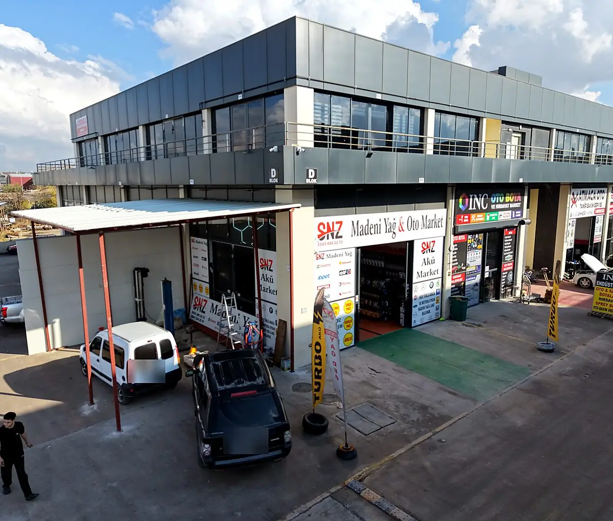

Her araca doğru yağ, doğru akü ve dürüst tavsiye.

SNZ Madeni Yağ & Oto Market; sürücülere, ustalara ve filo sahiplerine madeni yağ, akü ve oto bakım ürünleri sunar. Mağazamızda dünya markalarının motor yağları, şanzıman ve hidrolik yağları, gres yağları, AdBlue, antifriz ve aküleri stoklarımızda hazır bulunur.
Tabelamızda yazan sözümüz işimizi özetler: “Her türlü araca ve motora uygun madeni yağ ve akü bulunur.” İhtiyacınızı dinler, aracınızın üretici onaylarını kontrol eder ve size en pahalısını değil, en doğru ürünü öneririz.
Yan yana iki mağaza: Yağ değişim liftli SNZ Madeni Yağ & Oto Market ve SNZ Akü Market.
Doğru normda, orijinal ürünleri uygun fiyatla sunarak hizmet verdiğimiz her motorun ömrünü uzatmak.
Bölgemizde madeni yağ ve akü denince hem sürücülerin hem de işletmelerin aklına gelen ilk adres olmak.
Dürüstlük, orijinal ürün, teknik bilgi ve uzun soluklu müşteri ilişkisi.
Binek, SUV ve hafif ticari araçlar.
Servis ve tamirhanelere toptan tedarik, özel fiyat.
Kamyon ve otobüsler için ağır vasıta yağı, AdBlue ve akü.
Makineler için hidrolik, şanzıman ve gres yağları.
Uzman tavsiyesi alın, orijinal ürünlerinizi yerinde teslim alın.